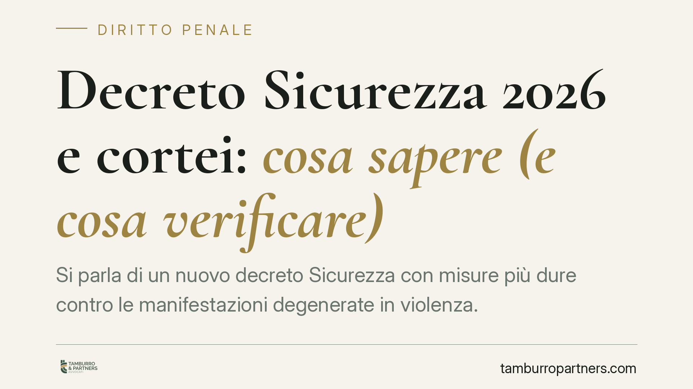

Decreto Sicurezza 2026 e cortei: cosa sapere (e cosa verificare)
Si parla di un nuovo decreto Sicurezza con misure più dure contro le manifestazioni degenerate in violenza. Prima di allarmarsi serve chiarezza: alcune regole esistono già nell'ordinamento, altre sono soltanto annunciate. Distinguere ciò che è diritto vigente da ciò che è una proposta non ancora confermata è essenziale per chi partecipa a cortei o ha figli minori coinvolti.

Premessa: separare le notizie dalle norme
Nelle ultime settimane circolano notizie su un decreto Sicurezza che inasprirebbe il trattamento dei cortei violenti, con nuovi reati, aggravanti e procedure d'arresto più rapide.
Una precisazione necessaria. Alla data di redazione di questo contributo non risulta pubblicato in Gazzetta Ufficiale un provvedimento verificabile con il contenuto descritto dalle cronache. Finché il testo non è pubblicato e consultabile, qualsiasi novità va considerata in discussione, non diritto vigente.
Per questo motivo in questo articolo distinguiamo con nettezza due piani: ciò che l'ordinamento prevede già oggi e ciò che sarebbe soltanto annunciato.
Cosa prevede già oggi il Codice penale
Il quadro vigente offre strumenti tutt'altro che blandi contro le condotte violente in contesti di piazza.
L'art. 419 c.p. punisce la devastazione e il saccheggio: è una delle fattispecie più gravi, con reclusione da otto a quindici anni, applicabile quando le violenze assumono dimensione collettiva e diffusa.
L'art. 635 c.p. disciplina il danneggiamento. La norma prevede già circostanze aggravanti, tra cui l'aver commesso il fatto in occasione di manifestazioni che si svolgono in luogo pubblico o aperto al pubblico.
L'art. 420 c.p. sanziona l'attentato a impianti di pubblica utilità. Va tenuto distinto dai reati di piazza: non introduce alcun "reato di violenza organizzata nelle manifestazioni".
Accanto a queste fattispecie operano i reati comuni di resistenza a pubblico ufficiale, lesioni e porto di oggetti atti a offendere.
La flagranza differita: dove esiste davvero
La flagranza differita consente di procedere all'arresto anche a distanza di tempo dal fatto, sulla base di documentazione video o fotografica che individui con certezza l'autore.
Questo strumento è previsto da tempo per le manifestazioni sportive (la cosiddetta normativa stadi). La sua eventuale estensione generalizzata ai cortei è, allo stato, legata a provvedimenti annunciati e non verificabili.
Il dato pratico resta però concreto e attuale: in contesti di piazza la documentazione audiovisiva ha un peso probatorio crescente. Immagini di telecamere di sorveglianza, riprese delle forze dell'ordine e persino filmati diffusi sui social possono fondare contestazioni anche a distanza di giorni.
La posizione dei minori e dei genitori
Un punto che merita attenzione riguarda i minori coinvolti in disordini.
Oggi il minore risponde penalmente dai quattordici anni, con il filtro del processo minorile e la valutazione della capacità di intendere e volere. Sul piano civile, i genitori rispondono dei danni cagionati dal figlio minore (art. 2048 c.c.), salvo la prova di non aver potuto impedire il fatto.
Le ipotesi di responsabilizzazione più marcata dei genitori, di cui si discute in sede politica, andranno valutate solo sul testo definitivo. Per ora la regola di riferimento resta quella civilistica appena richiamata.
Implicazioni pratiche
Per chi partecipa a una manifestazione pacifica il rischio non è la partecipazione in sé, ma il trovarsi coinvolto — anche solo per prossimità — in condotte violente altrui.
Il problema tipico è l'identificazione erronea tramite immagini: una persona ripresa vicino a episodi di danneggiamento può ricevere una contestazione pur senza averli commessi. In questi casi la ricostruzione puntuale della propria posizione diventa decisiva.
Per le famiglie, il tema è la gestione della fase iniziale quando a essere coinvolto è un minore: scelte compiute nelle prime ore incidono sull'intero procedimento.
Cosa fare in concreto
- Verifica le fonti prima di dare per certa qualunque "nuova stretta": controlla che il provvedimento sia realmente pubblicato in Gazzetta Ufficiale, con numero e data.
- Non rilasciare dichiarazioni alle forze dell'ordine senza aver prima parlato con un difensore, soprattutto se identificato o fermato.
- Conserva ogni elemento utile a ricostruire i tuoi spostamenti: biglietti, messaggi, geolocalizzazione, testimoni.
- Se riguarda un minore, attivati subito: nel procedimento minorile la fase iniziale è delicata e richiede assistenza specializzata.
- Richiedi assistenza legale tempestiva: è opportuno farlo prima dell'eventuale interrogatorio di garanzia.
Conclusione
L'inasprimento del trattamento dei cortei violenti è un tema reale, ma va seguito sul testo delle norme, non sulle anticipazioni. Il quadro vigente è già severo; le eventuali novità andranno lette con attenzione una volta pubblicate.
Contributo informativo a cura di Tamburro & Partners – Avv. Giuseppe Tamburro. Non costituisce parere legale.
Ogni condominio ha una storia a sé.
Se gestisci un'amministrazione e vuoi un confronto su una specifica questione condominiale, scrivi allo studio. Ti rispondiamo entro un giorno lavorativo.